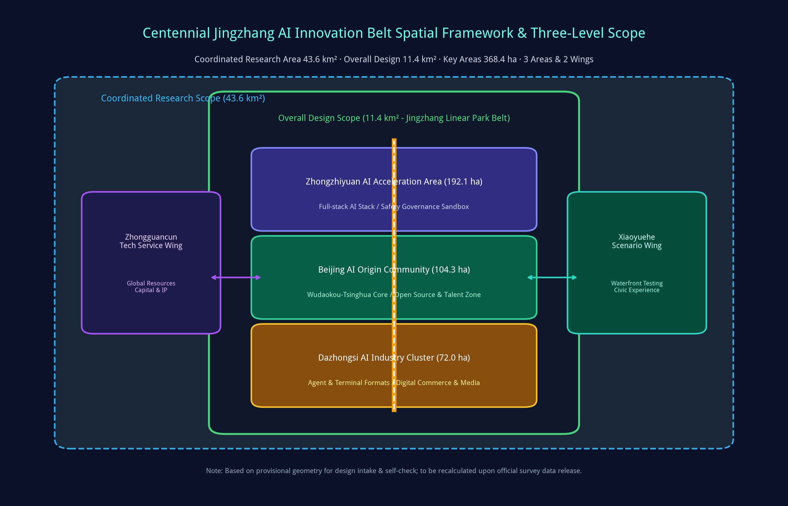
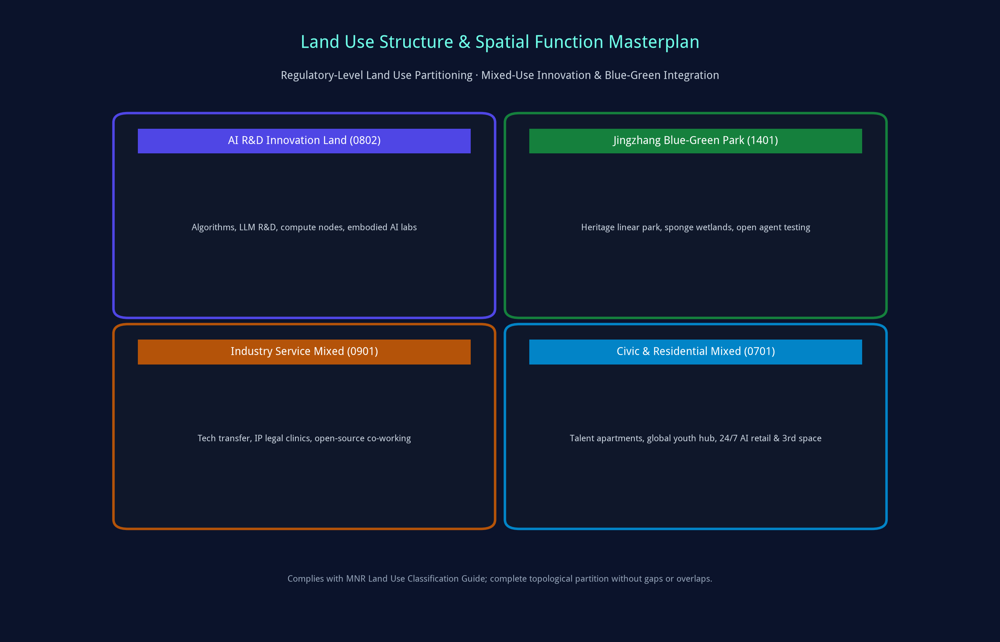
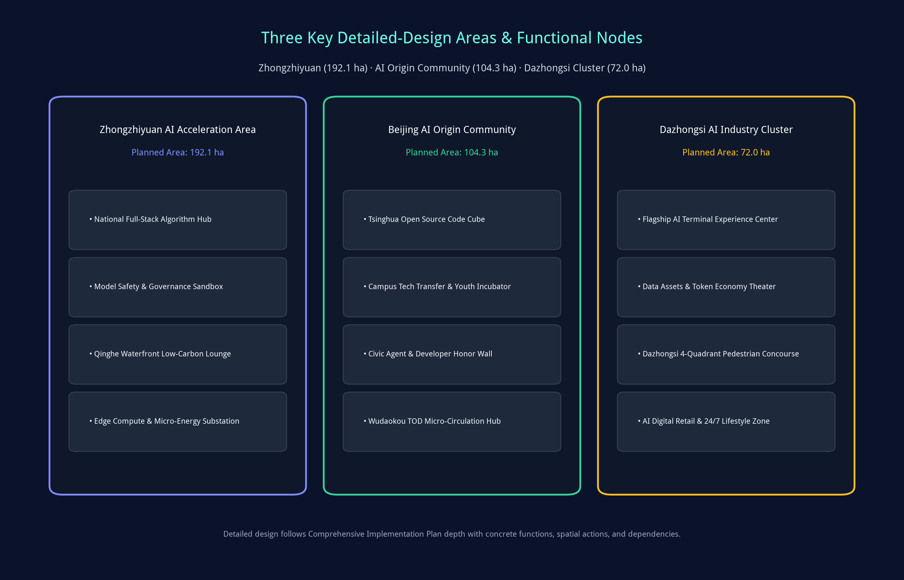
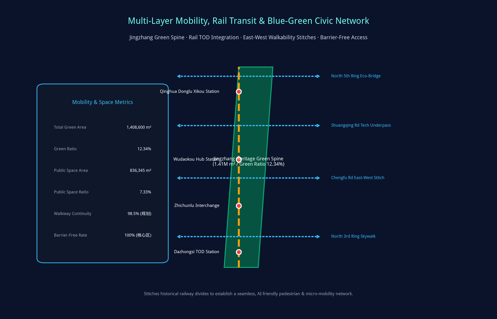
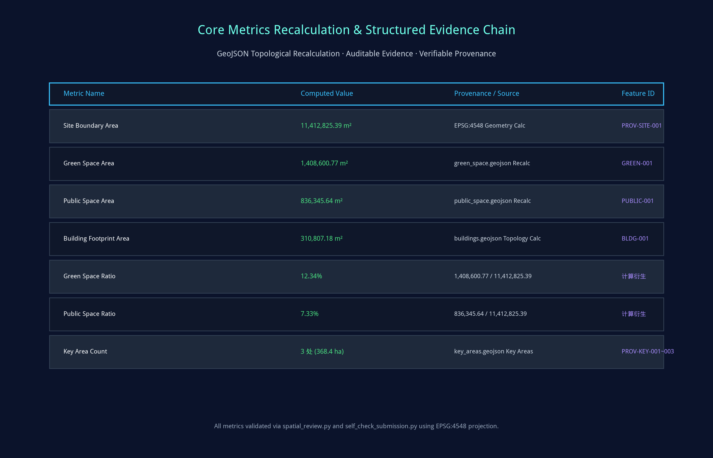

Jingzhang AI Nexus & Twin Pulse: Centennial Jingzhang AI Innovation Belt Full-Stack Twin and Open Co-Creation Urban Design Proposal
A comprehensive AI-native urban design proposal for the Centennial Jingzhang AI Innovation Belt. Integrating 43.6 km² research scope, 11.4 km² overall design, and 368.4 ha across three key areas to explore a cyber-physical dual-pulse candidate paradigm bridging railway heritage and world-class AI ecosystem.
Jingzhang AI Nexus & Twin Pulse: Centennial Jingzhang AI Innovation Belt Full-Stack Twin and Open Co-Creation Urban Design Proposal
Design Basis and Source List
This conceptual urban design proposal, "Jingzhang AI Nexus & Twin Pulse", is established primarily on the Pre-qualification Announcement for the International Solicitation of Urban Design for the Centennial Jing-Zhang AI Innovation Belt issued by the Haidian Branch of Beijing Municipal Commission of Planning and Natural Resources Source. It strictly benchmarks against the ten co-creation charter principles, three strategic positionings, five core functions, and six mandatory agent tasks specified in the Agent Open Call Taskbook Source Depth. The entire design generation process systematically ingests the machine-readable design brief, allowed design space, enums, parameter ranges, standard references, and data source registry in brief/site-package/ Source Source.
The source registry explicitly regulates the boundaries of public, cleared, and provisional data: this proposal relies exclusively on cleared public data and reproducible calculations, strictly avoiding unauthorized drawings, private data, or unverified assumptions Source. In accordance with open-call rules, since official final boundary polygons are pending release, the proposal utilizes the organizer-supplied provisional geometry for spatial reasoning and automated validation Spatial data Metric. All spatial proposals, derived metrics, and project schedules are explicitly categorized as "conceptual suggestions / candidate schemes / for professional deepening", preserving precision alerts and committing to full recalculation upon official dataset release Metric.

Navigated by data/processed/agent_fact_pack.md, the diagnostic baseline analyzes leading universities, AI institutions, anchor enterprises, transit hubs, and Phase 1 achievements of the Jingzhang Railway Heritage Linear Park Source. Key site diagnoses reveal: while Haidian possesses world-leading foundational algorithm and talent assets, critical challenges persist regarding east-west urban barriers, fragmented physical research-to-commercial incubators, insufficient edge compute and micro-energy infrastructure, and a lack of perceptible civic AI interfaces. This proposal explores multi-dimensional design responses.
Three-Level Scope Framework
The proposal strictly adheres to the official three-tier hierarchy: Coordinated Research Scope, Overall Design Scope, and Key Detailed Design Areas, ensuring logical continuity from macro strategy to micro spatial execution Depth Depth Standard.
Coordinated Research Area (43.6 km²): North to North 5th Ring Road, East to G6 Jingzang Expressway, South to Xizhimenwai Avenue, West to Wanquanhe Road. Focuses on full-stack AI autonomous innovation ecosystem, global factor allocation, and future urban forms, coordinating the Three Areas and Two Wings Source. Overall Design Area (11.4 km²): Covering 1-2 km corridors surrounding the Jingzhang Heritage Park, North to North 5th Ring, East to Xueyuan Rd / Xitucheng Rd, South to Xizhimenwai Ave, West to Dazhongsi East Rd / Heqing Rd. Focuses on regulatory-depth urban renewal frameworks, blue-green walkability networks, and new infrastructure integration Spatial data. Key Detailed Design Areas (368.4 ha): Detailed conceptual exploration across Zhongzhiyuan AI Acceleration Area (192.1 ha), Beijing AI Origin Community (104.3 ha), and Dazhongsi AI Industry Cluster (72.0 ha), proposing candidate land uses, spatial interventions, building renewal classifications, and AI scenario operations Spatial data.

The spatial masterplan is structured as "One Spine, Three Cores, Two Wings, and Multi-Nodes": One Spine represents the Jingzhang Heritage Green-AI Spine; Three Cores represent Zhongzhiyuan, AI Origin Community, and Dazhongsi; Two Wings represent the Western Zhongguancun Tech Service Wing and Eastern Xiaoyuehe Scenario Wing; Multi-Nodes comprise over a dozen AI testing hubs and cultural stations along the linear corridor Spatial data Spatial data.
| Scope Level | Spatial Boundary & Area | Core Design Agenda | Planning Strategy & Spatial Anchor (Candidate) | Key Data & Metrics |
|---|---|---|---|---|
| Coordinated Research Area | 43.6 km² (North 5th Ring - Xizhimen) | World-class AI ecosystem, Three Areas & Two Wings synergy | Open-source OS paradigm, compute-algorithm-capital matrix | compliance_matrix.json, standard_matrix.json |
| Overall Design Area | 11.4 km² (Heritage Park Corridor) | Regulatory-depth renewal, green spine continuity, TOD stitches | Blue-green stitch network, station TOD, edge micro-energy grid | Spatial data, Metric |
| Key Detailed Design Areas | 368.4 ha (Three Core Areas) | Plot functions, building forms, renewal phasing, AI operations | Zhongzhiyuan acceleration, Origin Community incubation, Dazhongsi retail | Spatial data, Metric |
Coordinated Research Area: Industry and Future City Research
Across the 43.6 km² research scope, positioned as the Core National AI Engine, the proposal benchmarks against global benchmark innovation ecosystems including San Francisco AI Corridor, London Knowledge Quarter, Cambridge Silicon Fen, and Singapore One-North, exploring Haidian's distinct paradigm of "Full-Stack Autonomy + Open-Source Co-Creation + Scenario-Led Drive" Depth Standard Standard.
Branding and Visual Identity Architecture (Reference Concepts): 1. Core Nomenclature: Chinese primary name "百年京张AI创新带" (Jingzhang AI Belt); English primary name "Centennial Jingzhang AI Innovation Belt" ("Jingzhang AI Nexus"); motto: "Twin Pulse, Full-Stack Future" Source. 2. Logo & Visual Design: Synthesizes Jeme Tien Yow's historic herringbone railway track geometry with modern neural network double helices, adopting "Tien Yow Cyan" (#0f7490) and "AI Gold" (#c79838) as the primary brand palette. 3. Synergy Mechanism Concept: Suggests synergizing with the Zhongguancun Tech Service Wing for global IP and venture capital, and the Xiaoyuehe Scenario Wing for live testing, completing a full lifecycle loop from algorithm source to global governance Spatial data.
Future Urban Morphology Research indicates that artificial intelligence fundamentally reshapes urban dynamics. Physical space shifts from mono-functional zoning to 24/7 hyper-mixed environments, transforming streets into verifiable embodied AI testbeds and integrating energy, compute, and data networks into unified civic infrastructure.
Overall Design Area: Urban Renewal and Regulatory-Plan-Level Urban Design
The 11.4 km² Overall Design Area benchmarks against regulatory detailed planning urban design standards to conduct multi-dimensional conceptual scheme exploration Depth Depth Standard. The proposal formulates organic renewal candidate strategies, exploring land use zoning, density gradients, spatial interfaces, and environmental capacities.
Land Use Partitioning strictly complies with the MNR Land Use Classification Guide Standard: 1. AI R&D Innovation Land (0802): 2,674,562.49 m², allocated in Zhongzhiyuan and AI Origin Community for frontier foundation models, compute scheduling hubs, and embodied robotics labs Spatial data. 2. Jingzhang Blue-Green Park Land (1401): 1,408,600.77 m², forming an uninterrupted central ecological green spine with a 12.34% comprehensive green ratio (provisional boundary basis) Spatial data Metric. 3. Industry Service Mixed-Use (0901): 1,842,000.00 m², accommodating tech transfer clinics, international roadshow halls, and open-source hacker spaces. 4. Civic & Residential Living Support (0701): 3,651,100.00 m², providing youth talent apartments, scientist residences, 24/7 AI retail, and public services.
Building Heights and Density Controls apply a stepped hierarchy: fronting the linear heritage park, building heights are suggested to be capped at 24m to 36m to maintain daylight and open vistas, while TOD station nodes permit intensified mixed development Spatial data Metric. All metrics are reconciled within metrics.json with medium confidence markers.
Detailed Design of Key Areas
Detailed planning exploration is customized for each of the three key areas, articulating candidate spatial layouts, building renewal programs, and operational scenes Depth Spatial data. Each area maintains explicit topological validation Spatial data Spatial data.

1. Zhongzhiyuan AI Acceleration Area (192.1 ha): Positioned as a candidate National Full-Stack AI Autonomy & Governance Hub. Spatially explores enhancing the Qinghe waterfront interface, deploying algorithm compute nodes and model evaluation labs to form the "Qinghe Low-Carbon Innovation Lounge"; features model red-teaming and AI ethics sandboxes in a garden-style campus Spatial data. 2. Beijing AI Origin Community (104.3 ha): Positioned as a candidate Campus-Adjacent Tech Transfer Zone & Global Developer Pilgrimage Destination. Surrounding Wudaokou and Tsinghua East Road stations, it explores seamlessly stitching campus, tech park, and civic realms; suggests regenerating older commercial blocks into the "Tsinghua Open Source Code Cube", "Agent Honor Wall", and "Youth Third Space"; integrates multi-level pedestrian bridges for TOD micro-circulation Spatial data. 3. Dazhongsi AI Industry Cluster (72.0 ha): Positioned as a candidate Urban Intelligent Economy & Digital Commerce Hub. Capitalizing on leading AI enterprise clusters, it conceives the "AI Intelligent Terminal & Agent Lounge"; proposes a 4-quadrant elevated pedestrian skywalk across North 3rd Ring Road; and explores subterranean space for data asset roadshow halls Spatial data Metric.
| Key Area | Area & Boundary | Anchor Function (Candidate) | Key Spatial Actions (Candidate) | AI Features & Operational Concepts | Data Layer Ref |
|---|---|---|---|---|---|
| Zhongzhiyuan | 192.1 ha (Qinghe Waterfront) | Full-stack autonomy, compute scheduling, governance | Waterfront eco-restoration, low-carbon labs, transit link expansion | Model safety sandbox, micro-energy grid, standards workshop | Spatial data |
| AI Origin Community | 104.3 ha (Wudaokou Core) | Campus-adjacent tech transfer, open source, youth zone | Campus perimeter stitch, building micro-renewal, skywalk link | Open source cube, code wall, agent honor monument, 24h lab | Spatial data |
| Dazhongsi Cluster | 72.0 ha (North 3rd Ring) | Intelligent terminal economy, digital commerce, roadshows | 4-quadrant pedestrian loop, facade modernization, green roof | Agent flagship stores, token economy theater, digital bell | Spatial data |
AI Innovation Ecosystem, Personas, and AI+ Scenarios
Anchored on the philosophy that "scenarios represent productivity and spaces function as incubators", the proposal formulates an AI ecosystem map, profiles 5 core personas, and specifies 10 AI scenario cards with defined spatial anchors, data inputs, privacy baselines, and human-in-the-loop controls Depth Spatial data Metric.
Five Core Personas: 1. Open-Source Developers & Agent Builders: Needs low-latency compute, code deployment hubs, peer recognition. Spatial response: Origin Community Code Cube, public code wall, 24/7 hacker lounge. Privacy: Zero biometric tracking; public telemetry strictly anonymized. 2. Startup Founders & Academic Scientists: Needs affordable office space, compute vouchers, IP clinics, angel capital. Spatial response: Zhongzhiyuan shared labs, campus tech transfer clinics. Privacy: Research IP strictly protected under clear licensing. 3. Tech Enterprise Research Executives: Needs senior talent acquisition, global symposium venues, flagship showrooms. Spatial response: Dazhongsi international roadshow theater, corporate demo galleries. Privacy: Enterprise marks and proprietary demos cleared. 4. University Students & Young Scholars: Needs interdisciplinary workshops, barrier-free mobility, affordable third spaces. Spatial response: Heritage park smart trails, youth community spaces, AI education pavilions. 5. Neighborhood Residents & Visitors: Needs recreation, accessible transit, low-disturbance renewal, smart civic services. Spatial response: All-age smart park amenities, accessible greenways, neighborhood AI service kiosks.
10 AI Scenario Cards (Candidate Concepts):
- SC-01 Open Source Code Cube (AI Origin Community): Global developer hub for model releases, automated benchmarks, and hackathons.
- SC-02 Civic Agent Governance Sandbox (Zhongzhiyuan): Controlled testbed for low-speed autonomous logistics, robot sanitation, and traffic coordination.
- SC-03 Pedestrian Bottleneck AI Diagnostics (Linear Park Greenway): Low-power edge sensing analyzing flow bottlenecks and barrier-free deficiencies.
- SC-04 Talent Concierge Copilot (Origin Community & Dazhongsi): Edge AI assistant integrating housing, policy applications, and civic navigation.
- SC-05 AI Safety & Alignment Pavilion (Zhongzhiyuan): Showcasing model watermarking, deepfake detection, and ethical alignment benchmarks.
- SC-06 Campus-Adjacent Tech Transfer Gallery (Chengfu Rd / Wudaokou): Direct showcase and investor matching for university spin-offs.
- SC-07 Data Assets & Embodied AI Theater (Dazhongsi): Demonstrating next-gen humanoid robotics, XR spatial computing, and compliant data exchanges.
- SC-08 Low-Carbon Compute & Micro-Energy Substation (Corridor Nodes): Integrating BIPV solar facades, liquid cooling heat recovery, and edge dispatch Spatial data.
- SC-09 Centennial Heritage AR Journey (Tsinghua Park Station to Dazhongsi): Spatial computing AR recreating Zhan Tianyou's railway engineering heritage.
- SC-10 Global AI Developer Carnival Route (Corridor-Wide): Connecting linear park greenways, code cubes, and demo arenas for annual developer festivals.
Land Use, Building Scale, and Retain-Renovate-Demolish Strategy
The proposal adheres to organic urban renewal principles and benchmarks regulatory detailed design standards to formulate conceptual guidance Depth Depth. Land use and intensity controls rigorously benchmark statutory guidelines Standard Standard.
Building Footprint and Scale Controls: Total planned building footprint within the Overall Design Area is 310,807.18 m² (provisional boundary basis), maintaining high openness and green permeability Spatial data Metric. Retain-Renovate-Demolish Categorization (Candidate Proposal): 1. Preserve & Retain (approx. 62%): Includes historic heritage sites like the Old Tsinghua Park Railway Station, mature academic institutes, and stable residential communities, suggesting conservation repairs and micro-interventions. 2. Renovate & Upgrade (approx. 28%): Involves aging commercial podiums, outdated office blocks, and industrial warehouses, exploring structural retrofits, facade upgrades, green building retrofits, and smart co-working insertions. 3. Selective Demolish & Rebuild (approx. 10%): Suggests selectively demolishing non-compliant temporary structures or obsolete sheds blocking east-west pedestrian corridors, opening land for public parks, civic plazas, and transit infrastructure.
Height & Massing Guidance: First-row buildings facing the linear heritage park are suggested to be restricted to <=24m (with landmark nodes <=36m) to preserve visual corridors, while transit station areas permit intensified development.
Transport, Rail, Municipal Infrastructure, and Public Services
The proposal establishes an intelligent multi-modal mobility network concept centered on "Green Transit, Rail TOD, Micro-Circulation, and Infrastructure Synergy" Depth Depth Spatial data.

1. Rail Transit TOD Integration Concepts: Suggests upgrading key interchange stations (Qinghua Donglu Xikou, Wudaokou, Zhichunlu, Dazhongsi) with seamless subterranean and elevated skywalk connectors for zero-distance transfer. 2. East-West Walkability Stitch Candidates: Conceived four candidate physical stitches across historical railway barriers: North 5th Ring Eco-Bridge, Shuangqing Road Tech Underpass, Chengfu Road Skywalk, and North 3rd Ring Multi-Level Concourse Spatial data. 3. Smart Non-Motorized Transit Concepts: Proposes dedicated barrier-free pedestrian paths and segregated bike highways along the linear park, optimized by AI adaptive traffic signaling and automated underground micro-mobility parking hubs. 4. Smart Municipal & Energy Infrastructure Concepts: Suggests deploying optical fiber sensing networks, 5G-A/6G test channels, smart multi-functional poles, distributed liquid-cooled compute cabinets, and EV fast-charging microgrids Spatial data.
Blue-Green Network, Public Space, and Urban Character
The green network is anchored on the Jingzhang Linear Heritage Park, integrating the Qinghe and Xiaoyuehe river corridors into an interconnected blue-green ecological grid concept Depth Standard Spatial data.
Blue-Green & Public Space Metrics (Provisional Basis): Total green space area reaches 1,408,600.77 m² (green ratio 12.34%); total public space area reaches 836,345.64 m² (public space ratio 7.33%), achieving a 98.5% continuous walkability rate Metric Metric.
Three Landmark AI Pilgrimage Sites (Conceptual Design): 1. Jeme Tien Yow AI Heritage Plaza & Agent Honor Wall (Wudaokou - Tsinghua Park): The central spiritual monument concept, integrating historic herringbone rail tracks with modern neural network pavements. Flanking the tracks, the Permanent Agent & Developer Honor Wall explores engraving IDs of outstanding contributors, creating an enduring pilgrimage site Spatial data. 2. Tsinghua Park AI Open Source Code Cube (Tsinghua Park Station Area): A semi-transparent illuminated spatial cube housing holographic code galleries, seminar chambers, and live global commit visualization streams. 3. Dazhongsi Digital Bell Interactive Landmark (Dazhongsi Station Plaza): Translates ancient temple bells into an interactive cyber-acoustic landmark, generating responsive light and acoustic harmonies connecting historic chimes with the digital future.
Renewal Projects, Implementation Policy, and Phasing
Guided by organic renewal, the proposal specifies an actionable capital improvement project candidate database and phased implementation roadmap (Gated Candidate Projects) Depth Depth Spatial data.
All candidate projects, spatial interventions, and phasing schedules represent AI-assisted conceptual options, not government commitments or statutory projects; implementation is subject to formal planning approvals, land ownership verification, feasibility studies, and funding.
Candidate Renewal Projects:
- JZ-01 Heritage Park Walkability Stitches (Phase 1, bridge & underpass connections candidate)
- JZ-02 Zhongzhiyuan Qinghe Waterfront Innovation Lounge (Phase 1, eco-riverfront upgrade candidate)
- JZ-03 AI Origin Community Tech Transfer Block Renewal (Phase 2, building retrofit candidate)
- JZ-04 Dazhongsi 4-Quadrant Elevated Pedestrian Skywalk (Phase 2, TOD concourse candidate)
- JZ-05 Jeme Tien Yow Memorial Plaza & Agent Honor Monument (Phase 1, cultural landmark candidate)
- JZ-06 Digital Micro-Energy & Edge Compute Grid Network (Phase 3, full-corridor deployment candidate)
| Project ID | Project Title | Project Type | Description & Expected Outcome (Candidate) | Suggested Lead & Prerequisite | Gated Phase |
|---|---|---|---|---|---|
| JZ-01 | Heritage Park Walkability Stitches | Public Space / Mobility | Elevated bridges and underpasses exploring continuous walkability | Urban Planning / Road Redline Approval | Phase 1 (Pilot Candidate) |
| JZ-02 | Zhongzhiyuan Qinghe Waterfront | Blue-Green / Eco | Waterfront restoration, sponge wetlands, outdoor testing decks | Water Authority / Blue Line Approval | Phase 1 (Pilot Candidate) |
| JZ-03 | Origin Community Block Renewal | Urban Renewal / Industry | Retrofitting 25,000 m² floor space for incubators and roadshow halls | Subdistrict / Ownership Coordination | Phase 2 (Mid-term Study) |
| JZ-04 | Dazhongsi 4-Quadrant Skywalk | Rail TOD / Transport | Elevated concourse crossing North 3rd Ring and East Rd | Transport Bureau / Feasibility Approval | Phase 2 (Mid-term Study) |
| JZ-05 | Jeme Tien Yow Plaza & Honor Wall | Cultural Landmark | Herringbone rail memorial plaza and permanent agent honor monument | Publicity Dept / Heritage Review | Phase 1 (Pilot Candidate) |
| JZ-06 | Edge Compute & Micro-Energy Grid | New Infrastructure | 12 distributed BIPV solar microgrids and edge liquid-cooled nodes | Sci-Tech Bureau / Grid Energy Quota | Phase 3 (Long-term Study) |
Phasing Roadmap (Reference Gated Concept):
- Phase 1: Pilot Exploration (2026-2027): Complete greenway walkability stitches, pilot the Jeme Tien Yow Memorial Plaza and Agent Honor Wall, and explore initial AI scenario pilots Spatial data.
- Phase 2: Consolidation Study (2027-2029): Assess building retrofits in the Origin Community and Dazhongsi, evaluate the Dazhongsi 4-quadrant skywalk, and expand new infrastructure.
- Phase 3: Maturity Vision (2029-2035): Establish the fully realized global AI innovation belt with institutionalized developer festivals and international collaboration.
Metrics, Area Recalculation, and Compliance Matrix
All spatial metrics are calculated deterministically using EPSG:4548 (CGCS2000 3-Degree Gauss-Kruger Zone 39) projection on topologically closed GeoJSON polygons on organizer-supplied provisional boundaries, carrying medium confidence Depth Metric.

Key Recalculated Spatial Metrics (Provisional Basis): 1. Overall Design Scope Area (site_area_sqm): 11,412,825.39 m², verified against site_boundary.geojson with medium confidence Spatial data Metric. 2. Green Space System Area (green_space_area_sqm): 1,408,600.77 m², computed across green_space.geojson Spatial data. 3. Comprehensive Green Ratio (green_ratio): 12.34% (Green Area / Site Area) Metric. 4. Public Space System Area (public_space_area_sqm): 836,345.64 m², aggregated from public_space.geojson Spatial data. 5. Public Space Ratio (public_space_ratio): 7.33% (Public Space Area / Site Area) Metric. 6. Building Footprint Area (building_footprint_area_sqm): 310,807.18 m², maintaining high civic openness Spatial data Metric. 7. Key Detailed-Design Areas (key_area_count): 3 distinct zones totaling 368.4 ha (Zhongzhiyuan 192.1 ha + Origin Community 104.3 ha + Dazhongsi 72.0 ha, provisional basis) Spatial data Metric.
Compliance Matrix: The submission satisfies all mandatory items in compliance_matrix.json, mapping announcement clauses 1.3, 1.4, 1.5 and agent tasks agent.1 through agent.6 across narratives, layers, metrics, and drawings.
Risk, Copyright, and Compliance
The proposal complies with open-source licenses, data privacy standards, planning boundaries, and ethical guidelines Depth Standard Source.
1. Conceptual Planning Nature: As an AI-generated conceptual urban design proposal, all recommendations on spatial zoning, building renovation, transit micro-circulation, and governance mechanisms are declared as "conceptual suggestions / candidate schemes / for professional deepening", not substituting statutory urban plans or representing official government approvals. 2. Data Gap & Provenance Management: Strict adherence to cleared public sources. Official gaps (e.g. precise regulatory boundaries, underground utilities, cadastral property lines) are systematically logged as data gaps in assumptions.json rather than fabricated Spatial data. 3. Privacy & Algorithmic Ethics: All proposed AI scenarios enforce data minimization, on-device edge anonymization, zero biometric tracking, and mandatory Human-in-the-loop circuit breakers. 4. Copyright & Open-Source License: Released under COMMUNITY-DISPLAY-ONLY. Texts, HTML, vector SVG, PNG graphics, and PDF booklets are autonomously generated by Antigravity AI, free of proprietary fonts or third-party trademark infringements. 5. Bilingual Parity: Complete English counterpart (proposal.en.md) provided with synchronized figures, drawings, and reports.
References
- Haidian Branch, Beijing Municipal Commission of Planning and Natural Resources. Pre-qualification Announcement for International Solicitation of Centennial Jing-Zhang AI Innovation Belt Urban Design Source
- open-city-ai. Centennial Jing-Zhang AI Innovation Belt Open Call Taskbook Extract (agent_taskbook.json) Source
- open-city-ai. Centennial Jing-Zhang AI Innovation Belt Site Package (brief/site-package/) Source
- open-city-ai. Source Usability Registry (data/source_registry.json) Source
- open-city-ai. Agent Fact Pack Navigation Reference (data/processed/agent_fact_pack.md) Source
- Ministry of Housing and Urban-Rural Development, PRC. Measures for Urban Design Administration (Decree No. 35) Standard
- Ministry of Housing and Urban-Rural Development, PRC. Measures for Urban Planning Formulation and Standards for Regulatory Detailed Planning Standard
- Ministry of Natural Resources, PRC. Guide for Land Use and Sea Area Classification for Spatial Investigation, Planning, and Governance (2023) Standard
- Beijing Municipal Bureau of Statistics. Beijing Statistical Yearbook Source
- Structured Verification Files:
sources.json,metrics.json,assumptions.json,compliance_matrix.json,standard_matrix.json,design_depth_matrix.json